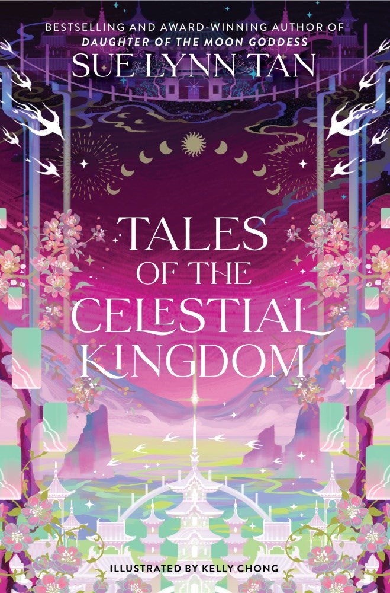

🔙 Back to All Books
- 
-
Tales of the Celestial Kingdom
Sue Lynn Tan
Book Description
Sue Lynn Tan’s highly acclaimed, bestselling Celestial Kingdom duology is expanded with this new compilation of stories from before, during, and after the events in Daughter of the Moon Goddess and Heart of the Sun Warrior, all from the perspectives of beloved characters and illustrated by Kelly Chong.
Return to the Immortal Realm, a world of gods, magic, and legendary creatures—and embark upon new adventures of valor, danger, and love.
Tales from the Celestial Kingdom collects nine spellbinding stories—two previously published, seven original, including the epilogue to the duology—set in the enchanting world of Sue Lynn Tan’s stunning debut. Filled with magic and mythology, friendship and love, these stories intertwine through the past, present, and future of the two novels, told from the perspectives of multiple characters, including Chang’e, Shuxiao, Liwei, and Wenzhi.
With beautiful illustrations from Kelly Chong throughout, these wondrous tales make the perfect complement to Sue Lynn Tan’s breathtaking series.
Genres
Fantasy | Young Adult | Romance | Short Stories | Fiction | Mythology
About the Author
Sue Lynn Tan is the author of Daughter of the Moon Goddess and Heart of the Sun Warrior. Her books will be translated into seventeen languages, and are USA Today and Sunday Times bestsellers.
Born in Malaysia, Sue Lynn studied in London and France, before moving to Hong Kong with her family. Her love for stories began with a gift from her father, her first compilation of fairytales from around the world. After devouring every fable she could find in the library, she discovered fantasy books, spending much of her childhood lost in magical worlds.